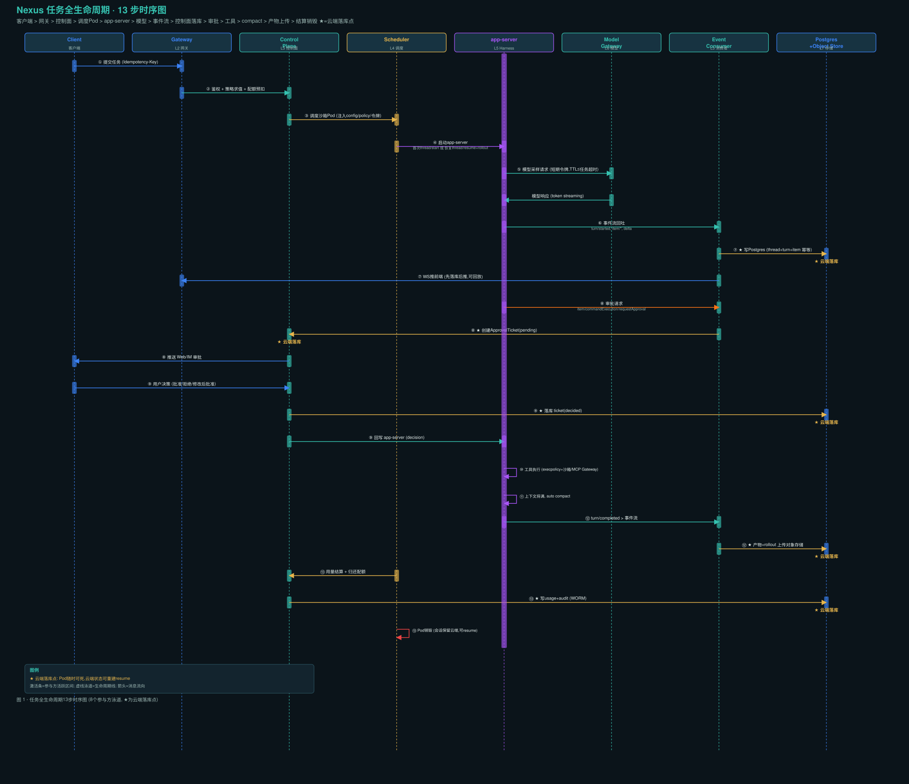
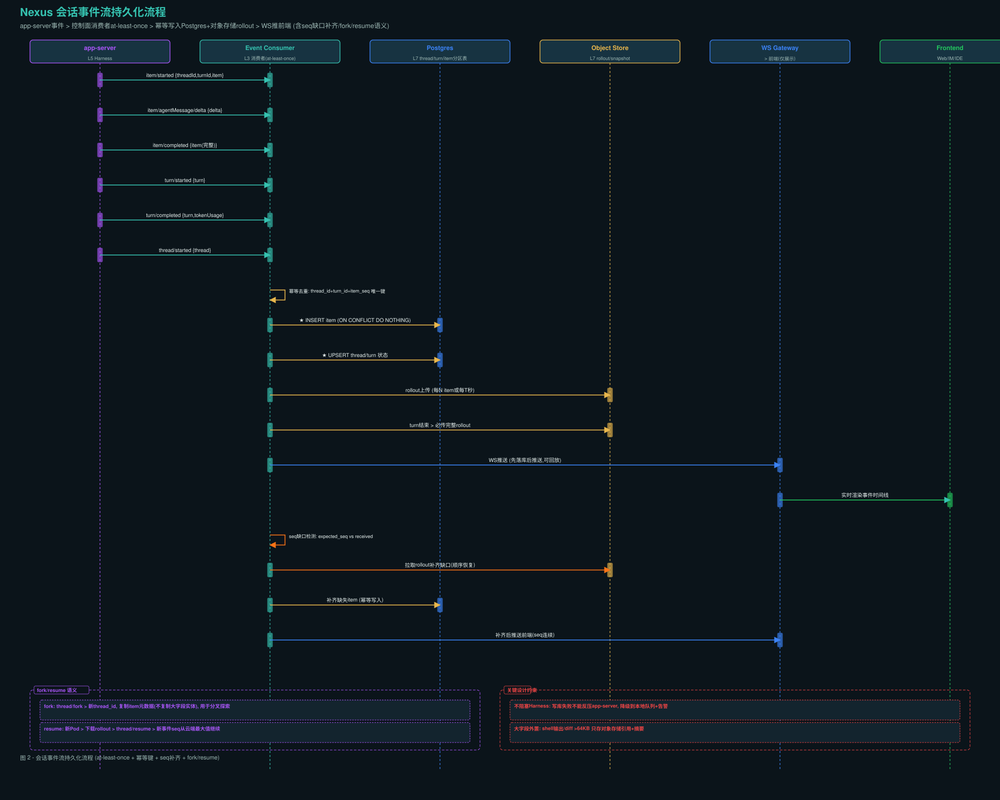
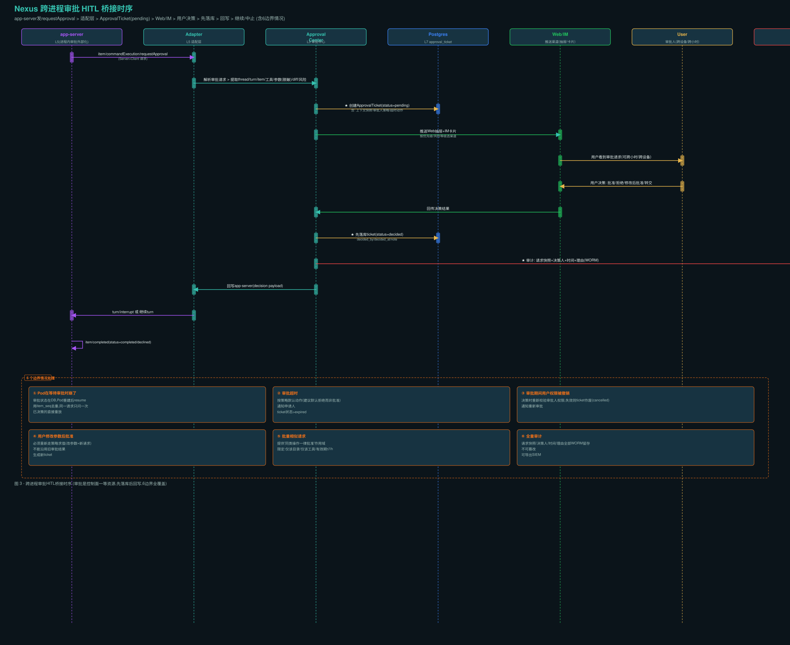
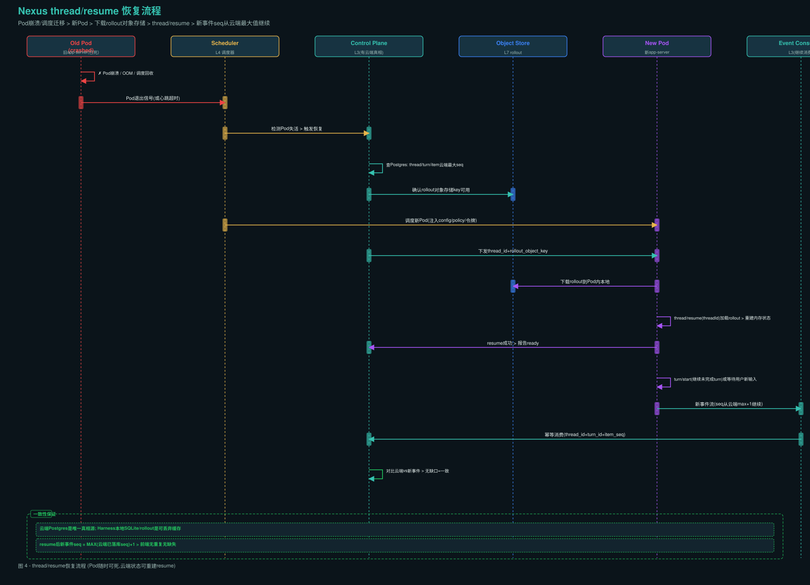
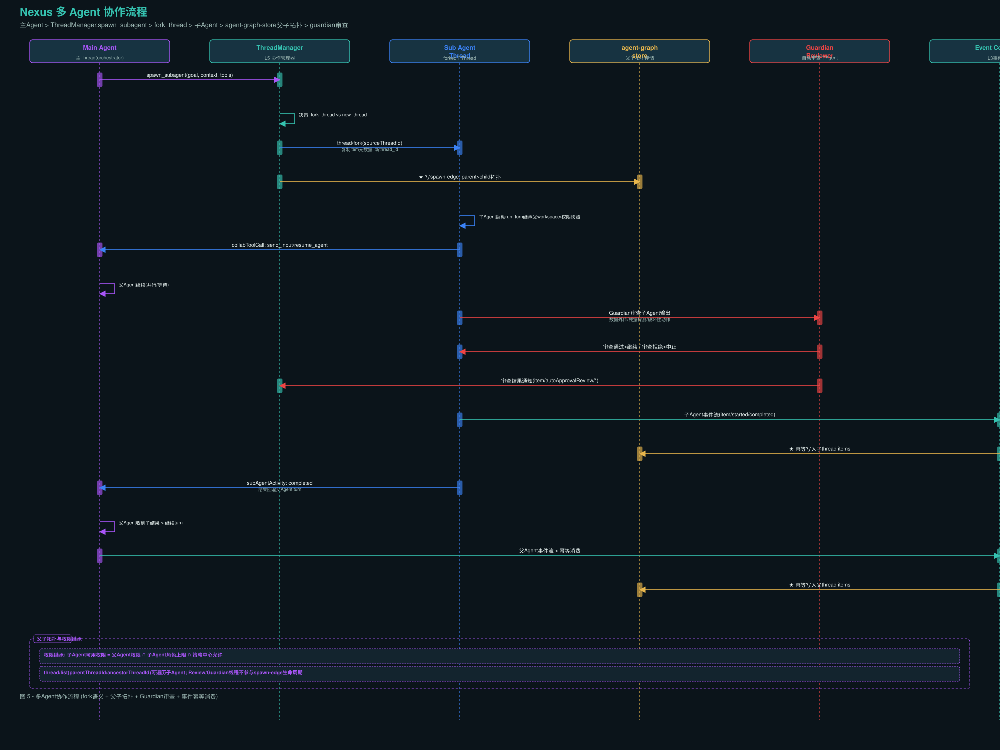
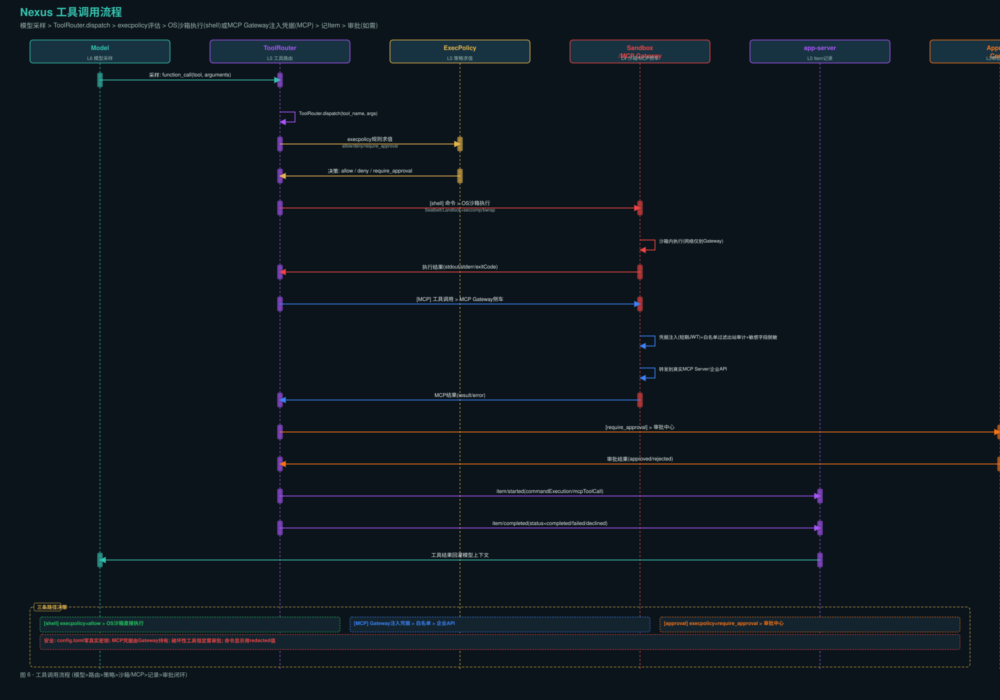
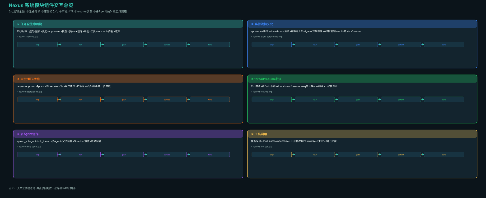

Nexus 系统模块组件交互流程报告
维度 04 · 6 大流程时序图 + 逐步说明 · 基座 Codex Harness app-server JSON-RPC · 八层架构对齐
图注色板：
★ 云端落库
一致性保证
安全/销毁
Harness
网络/存储
控制面
审批/策略
① 任务全生命周期 13 步时序图

图 1 · 8 个参与方泳道：Client → Gateway → Control Plane → Scheduler → app-server → Model Gateway → Event Consumer → Postgres+Object Store。★ 为云端落库点。
逐步说明（13 步）
| 步 | 动作 | 参与方 | 关键设计点 |
|---|---|---|---|
| ① | 客户端提交任务 | Client → Gateway | 幂等键 Idempotency-Key，避免重复提交产生双份计费 |
| ② | 鉴权 + 策略求值 + 配额预扣 | Gateway → Control Plane | 先扣后跑，防超卖；策略求值结果快照进任务上下文 |
| ③ | 调度沙箱 Pod | Control Plane → Scheduler | 注入 config.toml、execpolicy 规则集、短期令牌 |
| ④ | 启动 app-server，下发 rollout | Scheduler → app-server | 首次用 thread/start；恢复先下载 rollout 再 thread/resume |
| ⑤ | 模型采样 | app-server → Model Gateway | 沙箱出站只到 Model Gateway，令牌 TTL ≤ 任务超时 |
| ⑥ | 事件流回吐 | app-server → Event Consumer | turn/started、item/*、delta |
| ⑦★ | 控制面消费 → 写 Postgres + WS 推前端 | Event Consumer → Postgres/Gateway | 先落库后推，可回放；写库与推送解耦 |
| ⑧★ | 审批请求 → 落 ApprovalTicket → 推送 | app-server → Control Plane → Web/IM | 最复杂的一处桥接，见 §3 |
| ⑨★ | 用户决策回写 → app-server 继续 | User → Control Plane → app-server | 决策先落库再回写，宕机可重放 |
| ⑩ | 工具执行 | app-server | shell 走 execpolicy + OS 沙箱；MCP 走 Gateway |
| ⑪ | 上下文将满 → auto compact | app-server | 压缩前完整上下文已落云端，可回溯 |
| ⑫★ | turn/completed → 产物+rollout 上传 | app-server → Object Store | 产物扫描后才对用户可见 |
| ⑬★ | 用量结算 + 审计 → Pod 销毁 | Scheduler → Control Plane | 归还配额、写 usage、审计留痕；会话保留云端可 resume |
★ 云端落库点汇总
| 落库点 | 写入内容 | 幂等键 | 可回放 |
|---|---|---|---|
| ⑦ | thread / turn / item 事件流 | thread_id+turn_id+item_seq | 是，WS 可回放 |
| ⑧ | approval_ticket (pending) | thread_id+turn_id+item_seq | 是，Pod 重建后重放 |
| ⑨ | approval_ticket (decided) | ticket_id | 是，决策不可丢失 |
| ⑫ | 产物对象 + rollout 完整文件 | thread_id+turn_id+content_digest | 是，对象存储永久 |
| ⑬ | usage_record + audit_log | event_id (WORM) | 是，审计只追加 |
关键约束：事件即真相 · 先落库后推送 · Pod 随时可死可重建 · 配置即政策
② 会话事件流持久化流程

图 2 · app-server 事件 → at-least-once 消费 → 幂等写入 Postgres + 对象存储 → WS 推前端（含 seq 补齐、fork/resume 语义）
事件类型映射表
| app-server 事件 | 控制面动作 | 幂等写入目标 | 大字段处理 |
|---|---|---|---|
thread/started | UPSERT thread 状态 | thread 表 | — |
turn/started | UPSERT turn 状态 | turn 表 | — |
item/started | INSERT item | item 表（分区） | content_ref 指向对象存储 |
item/agentMessage/delta | 累积 delta | 仅推前端，不逐条落库 | — |
item/completed | UPDATE item (final) | item 表 | 大字段外置对象存储 |
turn/completed | UPDATE turn + token usage | turn 表 | — |
item/commandExecution/requestApproval | 创建 ApprovalTicket | approval_ticket 表 | 见 §3 |
幂等写入机制 + seq 补齐
唯一键 = (thread_id, turn_id, item_seq)
INSERT INTO item (...) VALUES (...) ON CONFLICT DO NOTHING
- 每个 Item 用
thread_id + turn_id + item_seq作唯一键，重复事件直接丢弃 - 消费者维护期望 seq；出现缺口 → 暂停推送 → 从对象存储拉 rollout 补齐 → 再继续
- 事件流是 at-least-once，"恰好一次"靠幂等键实现
fork/resume 语义
| 操作 | 语义 | 数据复制 |
|---|---|---|
thread/fork | 产生新 thread_id | 复制 item 元数据（不复制大字段实体），用于分叉探索 |
thread/resume | 新 Pod → 下载 rollout → 恢复内存状态 | 新事件 seq 从云端最大值继续 |
关键约束：不阻塞 Harness（写库失败降级到本地队列+告警）· 大字段外置（>64KB 只存引用+摘要）· WS 仅展示（落库是唯一 truth source）
③ 跨进程审批 HITL 桥接时序

图 3 · 7 个泳道：app-server → Adapter → Approval Center → Postgres → Web/IM → User → Audit。审批是控制面一等资源，先落库后回写。
审批 Ticket 生命周期 + 数据结构
pending → (用户决策) → decided(approved/rejected) → archived
↓
expired (超时, 默认拒绝)
cancelled (权限撤销)
| 字段 | 说明 |
|---|---|
thread_id / turn_id / item_seq | 定位到具体步骤 |
tool_name / params_ref | 工具名 + 参数（脱敏后引用） |
diff_preview_ref | diff 预览（对象存储引用） |
risk_level | low / medium / high / critical |
required_approver_role | 谁可以批 |
require_dual | 是否需双人审批（四眼原则） |
context_snapshot_ref | 审批时上下文快照 |
expires_at / default_action | 超时动作（默认拒绝） |
6 个边界情况处理
| # | 情况 | 处理 |
|---|---|---|
| ① | Pod 在等待审批时崩了 | 审批状态在 DB，Pod 重建后 resume；用 item_seq 去重，同一请求只问一次；已决策的直接重放决策 |
| ② | 审批超时 | 按策略默认动作（建议默认拒绝而非批准）；通知申请人；ticket → expired |
| ③ | 审批期间用户权限被撤销 | 决策时重新校验审批人权限，失效则 ticket 作废（cancelled）；通知重新审批 |
| ④ | 用户修改参数后批准 | 必须重新走策略求值（改参数=新请求）；不能沿用旧审批结果；生成新 ticket |
| ⑤ | 批量相似请求 | 提供"同类操作一律批准"作用域；限定：仅该目录、仅限该工具、有效期 ≤ 1h |
| ⑥ | 全量审计 | 请求快照/决策人/时间/理由全部 WORM 留存；不可篡改；可导出 SIEM |
④ thread/resume 恢复流程

图 4 · Pod 崩溃 → 新 Pod → 下载 rollout → thread/resume → seq 从云端 max 继续 → 一致性保证
恢复流程 14 步
| 步 | 动作 | 关键点 |
|---|---|---|
| 1 | Pod 崩溃（OOM/调度回收） | Harness 本地状态丢失，云端真相完好 |
| 2 | Pod 退出信号/心跳超时 | Scheduler 检测失活 |
| 3 | 查 Postgres 云端最大 seq | 确定恢复点 |
| 4 | 确认 rollout 对象存储 key | 确保 rollout 可用 |
| 5 | 调度新 Pod | 注入 config/policy/令牌 |
| 6 | 下载 rollout 到 Pod 内 | 从对象存储拉取完整事件历史 |
| 7 | thread/resume(threadId) | 加载 rollout → 重建内存状态 |
| 8 | resume 成功 → 报告 ready | 控制面确认恢复 |
| 9 | turn/start（继续未完成 turn） | 或等待用户新输入 |
| 10 | 新事件流（seq 从云端 max+1） | 前端无重复无缺失 |
| 11 | 幂等消费 | 重复事件直接丢弃 |
| 12 | 对比云端 vs 新事件 → 无缺口 = 一致 | 一致性验证 |
一致性保证
| 保证 | 机制 |
|---|---|
| 唯一真相源 | 云端 Postgres 是唯一 truth source |
| 本地可丢弃 | Harness 本地 SQLite/rollout 是可丢弃缓存 |
| seq 连续性 | resume 后新事件 seq = MAX(云端已落库 seq) + 1 |
| 无重复 | 幂等键 thread_id + turn_id + item_seq |
| 无缺失 | seq 缺口检测 + rollout 拉取补齐 |
app-server 协议：冷 resume 加载配置不持锁，允许无关线程元数据更新并发。仅一个 app-server 进程可持有分页 thread 的写权限（
-32600 错误保护）。
⑤ 多 Agent 协作流程

图 5 · 主 Agent → ThreadManager → fork_thread → 子 Agent → 父子拓扑 → Guardian 审查 → 结果回灌
协作时序 16 步
| 步 | 动作 | 关键点 |
|---|---|---|
| 1 | Main Agent 调用 spawn_subagent | 传递 goal/context/tools |
| 2 | ThreadManager 决策 | fork_thread（继承历史）vs new_thread（全新） |
| 3 | thread/fork(sourceThreadId) | 复制 item 元数据，新 thread_id |
| 4★ | 写 spawn-edge 拓扑 | parent → child 关系持久化 |
| 5 | 子 Agent 启动 run_turn | 继承父 workspace/权限快照 |
| 6 | 子 → 父 collabToolCall | send_input / resume_agent |
| 7 | 父 Agent 继续 | 可并行/等待 |
| 8 | Guardian 审查子 Agent 输出 | 数据外传/凭据探测/破坏性动作 |
| 9 | 审查通过 → 继续 / 审查拒绝 → 中止 | Guardian gate |
| 10 | 审查结果通知 | item/autoApprovalReview/* |
| 12★ | 幂等写入子 thread items | thread_id+turn_id+item_seq |
| 13 | subAgentActivity: completed | 结果回灌父 Agent turn |
| 16★ | 幂等写入父 thread items | 同样幂等 |
父子拓扑与权限继承
| 维度 | 规则 |
|---|---|
| 拓扑存储 | agent-graph-store 维护 spawn-edge（parent → child） |
| 权限继承 | 子 Agent 可用权限 = 父 Agent 权限 ∩ 子 Agent 角色上限 ∩ 策略中心允许 |
| 遍历 | thread/list(parentThreadId/ancestorThreadId) 可遍历子 Agent |
| 排除 | Review/Guardian 线程不参与 spawn-edge 生命周期 |
collabToolCall 类型
| 工具 | 说明 |
|---|---|
spawn_agent | 派生子 Agent |
send_input | 向子 Agent 发送输入 |
resume_agent | 恢复子 Agent |
wait | 等待子 Agent 完成 |
close_agent | 关闭子 Agent |
⑥ 工具调用流程

图 6 · 模型采样 → ToolRouter → execpolicy → OS 沙箱/MCP Gateway → 记 Item → 审批（如需）
工具调用 16 步
| 步 | 动作 | 关键点 |
|---|---|---|
| 1 | 模型采样 | function_call(tool, arguments) |
| 2 | ToolRouter.dispatch | 统一工具路由 |
| 3 | execpolicy 规则求值 | allow / deny / require_approval |
| 4 | 决策返回 | 三条路径分支 |
| 5a | [shell] 命令 → OS 沙箱 | Seatbelt/Landlock+seccomp/bwrap |
| 5b | [MCP] 工具调用 → MCP Gateway 侧车 | 凭据注入 |
| 5c | [approval] → 审批中心 | execpolicy=require_approval |
| 7 | item/started | 记录 commandExecution/mcpToolCall/fileChange |
| 8 | item/completed | status=completed/failed/declined |
| 9 | 工具结果回灌模型 | 作为 functionCallOutput 回灌 |
三条路径决策
| 路径 | execpolicy 决策 | 执行方式 | 审批 |
|---|---|---|---|
| shell | allow | OS 沙箱直接执行 | 不需要 |
| MCP | allow | MCP Gateway 注入凭据 → 白名单 → 企业 API | 不需要 |
| approval | require_approval | 审批中心 → 用户决策 → 执行/中止 | 必须 |
安全约束
| 约束 | 实现 |
|---|---|
| config.toml 零真实密钥 | 只出现指向 Gateway 的本地地址与任务令牌 |
| MCP 凭据由 Gateway 持有 | 短期委托令牌向控制面换取 |
| 破坏性工具恒定需审批 | execpolicy 规则强制 |
| 命令显示用 redacted 值 | commandActions 为脱敏展示值 |
| 网络出站仅两个白名单 | Model Gateway + MCP Gateway |
⑦ 交互流程总览

图 7 · 6 大流程全景总览
6 大流程关系矩阵
| 流程 | 核心参与方 | 持久化点 | 恢复能力 | 审批介入 |
|---|---|---|---|---|
| ① 生命周期 | 全部 8 层 | 5 个 ★ 点 | Pod 可死可重建 | ⑧⑨ 步 |
| ② 事件持久化 | app-server → L3 → L7 | item 幂等写入 | seq 补齐 + fork/resume | — |
| ③ 审批 HITL | app-server → L3 → User | approval_ticket | Pod 重建后重放 | 全流程核心 |
| ④ resume 恢复 | Scheduler → L3 → L7 → 新Pod | rollout 下载 | seq 从云端 max 继续 | — |
| ⑤ 多 Agent | Main → Sub → graph-store | spawn-edge + items | fork 语义 | Guardian gate |
| ⑥ 工具调用 | Model → ToolRouter → 沙箱/MCP | item 记录 | — | require_approval 路径 |
流程间依赖关系
①生命周期 ──包含──→ ②事件持久化（⑥⑦步）
│ ├──包含──→ ③审批HITL（⑧⑨步）
│ └──包含──→ ④resume恢复（④步恢复）
│
├──包含──→ ⑥工具调用（⑩步）
│ └──触发──→ ③审批HITL（require_approval路径）
│
└──扩展──→ ⑤多Agent协作（子Agent独立生命周期）
└──包含──→ ②事件持久化（子thread items）
设计原则贯穿
| 原则 | 体现 |
|---|---|
| 控制面/执行面分离 | 所有 ★ 落库点在 L3/L7，执行面不持有真相 |
| Harness 不持有企业真相 | 租户/权限/凭据/计费/审计全在控制面 |
| 事件即真相 | app-server 事件流 → 控制面消费 → 落库 → 推前端 |
| 默认最小权限 | 新租户默认只读沙箱 + 全量审批 |
| 可重建优于高可用 | Pod 随时可死，云端状态可重建 resume |
| 配置即政策 | config.toml + execpolicy + MCP 白名单 + AGENTS.md |
产物文件清单：
interaction-flow.md ·
interaction-flow-report.html ·
_gen_svg.py ·
flow-01-lifecycle.svg/png ·
flow-02-event-persistence.svg/png ·
flow-03-approval-hitl.svg/png ·
flow-04-resume.svg/png ·
flow-05-multi-agent.svg/png ·
flow-06-tool-call.svg/png ·
interaction-flow-overview.svg/png